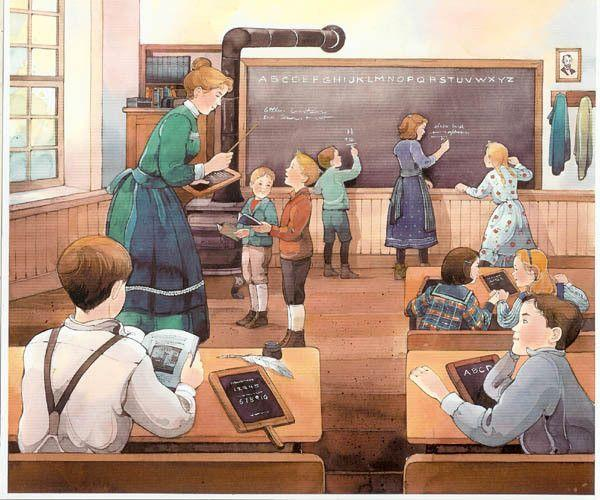

Primeira parada
Preparados para viajar?0 de 4 paradas

🏫
Parada 1 — A escola do passado
Adicione a imagem correspondente à pasta images do seu repositório GitHub.
Viagem concluída!
Hoje conhecemos um pouco da história de Allan Kardec, que estudou e organizou os ensinamentos da Doutrina Espírita.
O que aprendemos fica ainda mais importante quando colocamos o bem em prática: ajudar, acolher, respeitar e tratar as pessoas com amor.